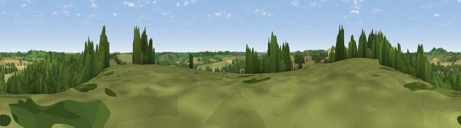

Viewpoint near Fawsley
#27047 in England · top 34% of its area beats it · near FawsleyWhere it is
The exact computed spot (SP 56175 57875). Click the marker for map links.
The view, rendered

A 360° render of this exact spot computed from the terrain model, tree cover and land cover — summer colours, afternoon light, calibrated against photographs of famous viewpoints. Real trees, hedges and buildings will differ in detail.
The panorama
Grey silhouette: terrain skyline in each direction (720 bearings, Earth curvature and refraction included). Dashed green: skyline with trees (+15 m) and buildings (+8 m) as obstacles. Blue strip: how far the ground is visible on each bearing.
Where the view opens
Wedge length = distance to the farthest visible ground on that bearing (vegetation-aware). Rings at 10, 25 and 50 km.
What fills the view
51% woodland · 31% grassland · 17% cropland ·
Angular shares of the visible panorama (visual magnitude), not map area. Landscape diversity 0.46 (0–1 Shannon).
Key numbers
More beautiful places nearby
The staircase of upgrades: each row has a higher view potential than everything closer. Driving times are estimates from straight-line distance, calibrated against real road routing — check an actual route before setting out.
| Place | Direction | Drive | Score |
|---|---|---|---|
| Viewpoint near Badby | WNW · 1 km | ~2 min | 49.9 |
| Arbury Hill | WNW · 2 km | ~6 min | 61.8 |
| Viewpoint near Staverton | NNW · 3 km | ~8 min | 63.3 |
| Big Hill - Staverton Clump | NNW · 4 km | ~8 min | 68.4 |
| Viewpoint near Northend | WSW · 17 km | ~30 min | 69.7 |
| Viewpoint near Northend | WSW · 17 km | ~30 min | 70.3 |
| Viewpoint near Radway | WSW · 20 km | ~34 min | 71.7 |
| Viewpoint near Ilmington | WSW · 39 km | ~58 min | 72.6 |
52.21623, -1.17919 · source: screening · position refined by local search. Computed location — check access rights before visiting.